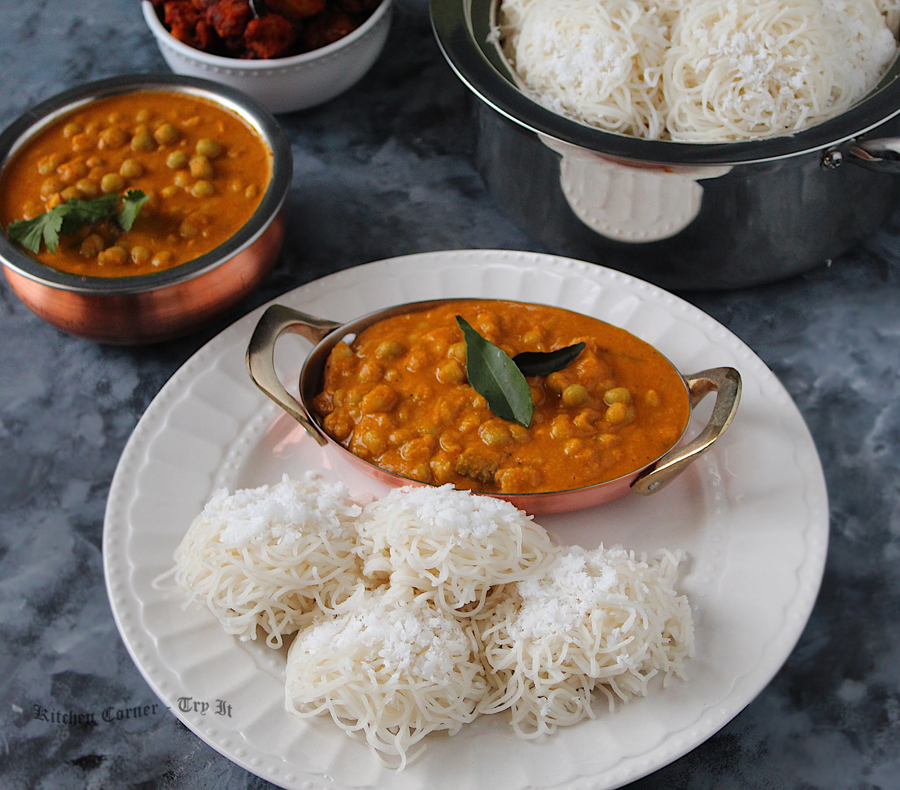
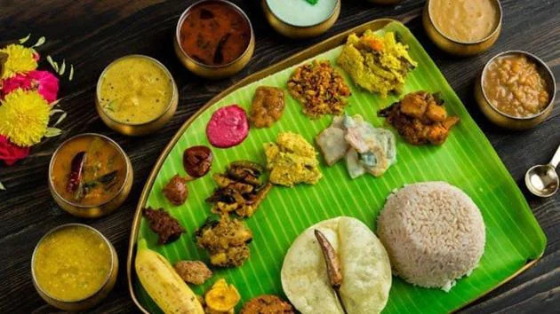

One of the famous dishes of Kerala is Idiyappam which is relished by most of the people. Also known as Noolappam in Kerala cuisine, Idiyappam, food of Kerala, is made of rice flour, salt and water with a number of thin strands or sevai entwined together to make the lovely texture that this dish bears. It is this texture that makes it versatile. You can have it with all kinds of curries, but it tastes best with Egg Curry.
Read
C

02
PUTTU AND KANDALA CURRY
Puttu and Kandala curry is enjoyed by people of Kerala which is considered to be one of the popular traditional Kerala dishes. A famous breakfast recipe out of the many Kerala dishes, Puttu is a cylindrical steamed rice cake that is cooked in a mould with grated coconut. It can be served with ripe bananas, grated coconut, and kadala curry (the Keralite version of ‘Kala Chana’!
Read
C
03
APPAM WITH STEW
One of the traditional Kerala dishes is flavoursome and yummy. A famous food of Kerala, made from fermented rice flour, coconut milk, coconut water, and a teensy bit of sugar, Appam is essentially a thin pancake with crispy edges. These crepe-like bowls are best enjoyed with Ishtu, a kind of stew that has been originally derived from the European stew and is made from coconut milk, cinnamon, cloves and shallots, and sometimes also mango pieces and vegetables. The aroma of spices with the sweet fragrance of coconut milk is enough to lure foodies to the kitchen!
Read
C
04
ELA SADYA
Ela Sadya is one of the finest meals which is incorporated in traditional Kerala dishes whose aroma will water your mouth. Ela Sadya is the king of all Kerala food items! With more options than you’d ever have seen on your platter, Sadya is prepared and served during religious and ceremonial occasions like festivals, weddings, and more. This royal lunch combination of dishes like pachadi, kichadi, pulissery, olan, sambar, varavu, thoran, aviyal, payasam are served with hot steaming rice on a banana leaf.
Read
C

05
MALABAR PAROTTA AND CURRY
Layered flat bread that originated in the Malabar region called Parotta is made by kneading maida (plain flour), egg (in some recipes), oil or ghee and water. The dough is beaten and later shaped into a spiral with thin layers. The ball is rolled flat and roasted into a Parotta with ghee. This is then eaten with beef curry - pieces of beef simmered in a curry made with tomatoes, onions, garlic and spices like bay leaves, cinnamon, cardamom, cloves, black peppercorns and star anise.